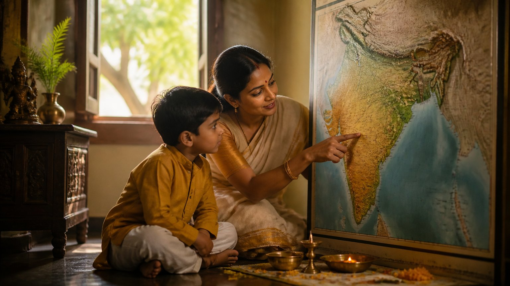

3 जुलाई 2025। माउंट आबू की शांत वादियां। ब्रह्माकुमारी संस्था का राष्ट्रीय सम्मेलन, विषय था "अध्यात्म द्वारा महिला सशक्तिकरण"। देश के कोने-कोने से 500 से अधिक प्रभावशाली महिलाएं वहां उपस्थित थीं।
इस सभा में विशिष्ट अतिथि थे अंतर योग फाउंडेशन के संस्थापक सद्गुरु आचार्य उपेंद्र जी। और उन्होंने जो कहा, उसने पूरे सभागार को स्तब्ध कर दिया।
न दैन्यं न पलायनम्
दीप प्रज्वलन के बाद एक ज्येष्ठ ब्रह्माकुमारी साधिका ने आचार्य जी का परिचय कराया। उन्होंने बताया कि आचार्य जी सन 2005 से मातृभूमि की निस्वार्थ सेवा कर रहे हैं, और शास्त्र केवल सिखाते नहीं, उन्हें जीते भी हैं।
उनके जीवन को उन्होंने "माया के अंधकार में जलता दीया" कहा, और अर्जुन के उद्घोष का स्मरण किया:
न दैन्यं न पलायनम्
"न दैन्य (दीनता, helplessness), न पलायन (भाग जाना, retreat)। कर्तव्य के पथ पर दृढ़ संकल्प के साथ आगे बढ़ते रहना।"
(महाभारत परंपरा में अर्जुन का उद्घोष)
क्या स्त्री पुरुष के बराबर है?
आज की हर बहस "बराबरी" पर आकर रुक जाती है। आचार्य जी ने इस प्रश्न को ही उलट दिया। उन्होंने कहा कि स्त्री कभी भी पुरुष के बराबर नहीं, वह कम से कम हजार गुना शक्तिशाली है।
इसका प्रमाण उन्होंने शास्त्र से दिया। दुर्गा सप्तशती में देवी को दोनों रूपों में नमन है:
अतिसौम्यातिरौद्रायै नतास्तस्यै नमो नमः
"जो अत्यंत सौम्य (कोमल, gentle) भी हैं और अत्यंत रौद्र (प्रचंड, fierce) भी, उन्हें बारंबार नमस्कार।"
(श्रीदुर्गासप्तशती ५.१३)
पर आचार्य जी ने एक कड़वा सच भी रखा। स्त्री का रौद्र रूप अक्सर घर में, पति के सामने निकलता है, और बाहर वह सौम्य बनी रहती है। बाहर कितना भी अत्याचार हो, वह सह लेती है, जबकि उसे सहना नहीं था।
क्या आपकी शक्ति वहां प्रकट होती है जहां उसकी सच में आवश्यकता है?
भारत में किस चीज की कमी है?
आचार्य जी के अनुसार भारत के पास विश्व गुरु बनने के लिए सारा ज्ञान और सारी शक्तियां हैं। कमी केवल एक है: भारत अभी अर्धनारीश्वर स्थिति में नहीं आया।
अर्धनारीश्वर, अर्थात शिव और शक्ति का एक ही स्वरूप में मिलन, पुरुष और प्रकृति का संतुलन। आज भी समाज पुरुष-प्रधान है। उन्होंने पूछा, देश में कितनी महिलाएं प्रधानमंत्री बनीं? केवल एक। बाकी क्यों नहीं?
इसीलिए उन्होंने यह कार्य आरंभ किया, क्योंकि यह परिवर्तन महिला सशक्तिकरण से ही आएगा। पर कैसे? पहले नारी की अपनी शक्तियों को पहचानना होगा।
बीस मिनट की यात्रा और अंतर्ज्ञान
आचार्य जी ने एक बहुत साधारण-सा उदाहरण दिया। आप बस या ट्रेन के डिब्बे में चढ़ती हैं। खिड़की की सारी सीटें पुरुषों ने ले रखी हैं। यात्रा बस बीस मिनट की है।
फिर भी एक स्त्री पल भर में भांप लेती है: "इसका भाव ठीक नहीं लगता, यह कुछ गुंडे जैसा लगता है।" और वह ठीक उसी के पास जाकर बैठती है जो सभ्य है। आचार्य जी कहते हैं कि उसमें वह सहज अंतर्ज्ञान की शक्ति है।
यह अंतर्ज्ञान (intuition) कोई सीखी हुई चीज नहीं, स्त्री में स्वाभाविक है।
धृति, स्मृति और मेधा: मुस्कुराता हुआ सत्य
धृति का अर्थ है धारणा शक्ति (retention), किसी बात को बहुत लंबे समय तक थामे रखना।
आचार्य जी ने हल्के अंदाज में समझाया। कोई पुरुष पूछे, "मैं कहां गलत था?", तो वे कहते हैं: जाकर पत्नी से बस इतना कह देना कि उसने एक गलती की थी। फिर देखना! तुमने, तुम्हारी मां ने, तुम्हारे परिवार ने कब-कब क्या गलती की, सब बता देगी।
और वह भी ठीक सही समय पर, किसी समारोह में, सही शब्दों के साथ। यही है स्मृति (memory), धृति (retention) और मेधा (intelligence) का संगम। सभागार में हंसी थी, पर बात गहरी थी: ये शक्तियां स्त्री में अद्भुत रूप से विकसित हैं।
मां, गुरु और भारत माता
अब संबोधन अपने सबसे गहरे बिंदु पर पहुंचा। आचार्य जी ने कहा कि जब तक एक मां समझ में नहीं आती, तब तक हम गुरु को नहीं समझ सकते, और जब तक गुरु को मां के रूप में नहीं समझते, तब तक भारत माता को नहीं समझ सकते।
और भारत को यदि विश्व गुरु बनना है, तो सोचिए: बाकी दुनिया दूसरे धर्मों के लोगों की है। वे हमारी बात कब और क्यों सुनेंगे? आचार्य जी का प्रश्न था: क्या हम एक माता की तरह उन्हें समझने के लिए तैयार हैं?
क्या आप दूसरों को उसी धैर्य से समझ पाते हैं, जिससे एक मां अपने बच्चे को समझती है?

सभागार की प्रतिक्रिया
उपस्थित महिलाओं ने अनुभव किया कि आचार्य जी की दृष्टि में स्त्री साधारण नहीं, अत्यंत पूजनीय और शक्तिशाली है। सत्र के बाद अनेक महिलाओं ने उनसे व्यक्तिगत रूप से मिलकर कृतज्ञता व्यक्त की।
उन्हें ये बातें व्यावहारिक और तर्कसंगत लगीं, और अपने जीवन की समस्याओं का समाधान भी मिला। कई ने अंतर योग फाउंडेशन के कार्यों के बारे में और जानने की इच्छा जताई।
मुख्य बातें
- स्त्री पुरुष के बराबर नहीं, कम से कम हजार गुना शक्तिशाली है।
- देवी अतिसौम्य भी हैं और अतिरौद्र भी; स्त्री को अपना रौद्र रूप वहां प्रकट करना चाहिए जहां अत्याचार हो, न कि उसे सहना चाहिए।
- भारत के पास सब कुछ है, केवल अर्धनारीश्वर संतुलन की कमी है, और यह महिला सशक्तिकरण से ही आएगा।
- अंतर्ज्ञान, धृति, स्मृति और मेधा स्त्री की स्वाभाविक शक्तियां हैं।
- मां को समझे बिना गुरु को नहीं, और गुरु मां को समझे बिना भारत माता को नहीं समझा जा सकता।
- विश्व गुरु बनने के लिए भारत को दुनिया को एक माता की तरह समझना होगा।
आगे पढ़ें
क्या आप किसी ऐसे रिश्ते को पकड़े बैठे हैं जो रोज़ आपको तोड़ रहा है? गुणों की दृष्टि से इसे तामसिक रिश्ता कहा जाता है। आइए समझें कि यह क्या है, और…

हम अक्सर महाकाली को केवल उग्र रूप में देखते हैं। पर क्या आपने कभी सोचा है कि दुर्गा सप्तशती का पहला खंड महाकाली का ही क्यों है?

सिखाने को बहुत कुछ है। वास्तव में बहुत कुछ।